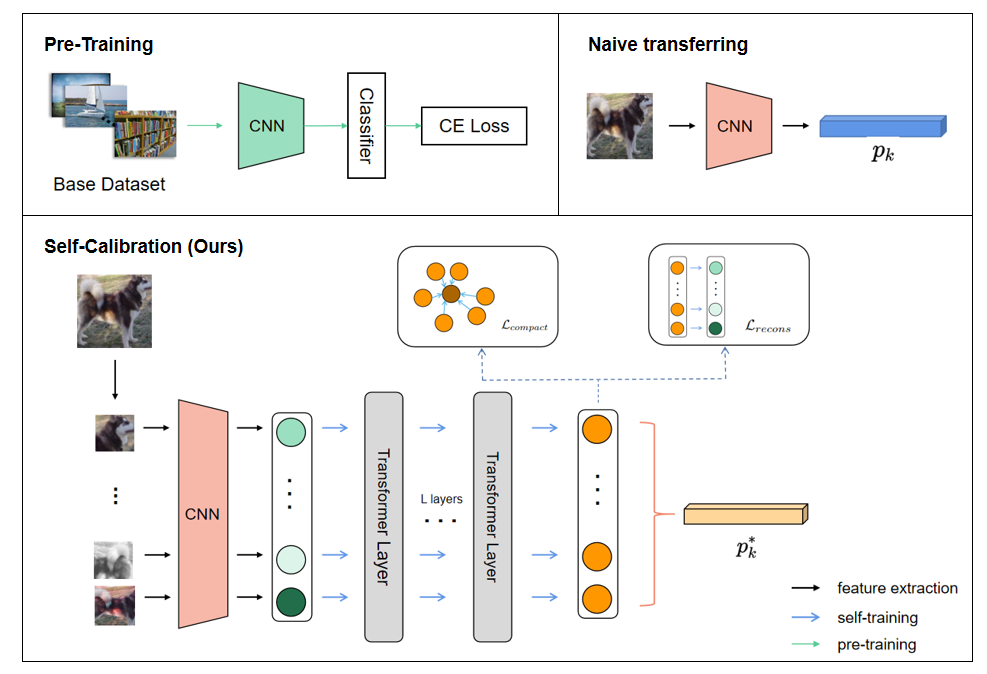
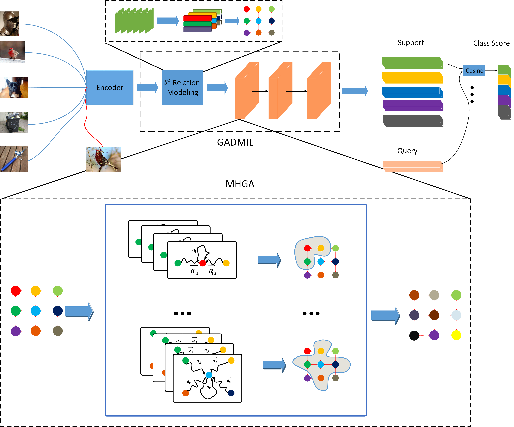
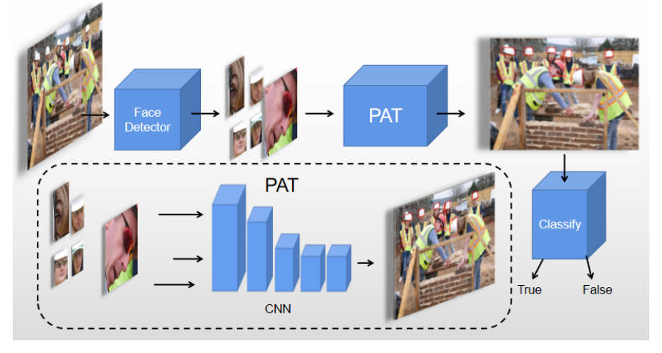

Kaipeng Zheng 郑凯鹏
I am a master student in the Department of Computer Science and Engineering at UESTC, advised by Prof. Jie Shen. Before this, I received my Bachelor's Degree in Honors College at UESTC in 2020.
My previous research was mainly concerned with topics related to few-shot learning, transfer learning and representation learning.
Education
- 09/2020 ~ Present: Master student, Computer Science and Technology, University of Electronic Science and Technology of China
- 09/2016 ~ 06/2020: Undergraduate student, Honors College, University of Electronic Science and Technology of China
Email /
CV
|
|
Research
Boosting few-shot learning by self-calibration in feature space
Kaipeng Zheng, Liu Cheng, Jie Shen, M4MM @ ACM Multimedia, 2022

Actually, recent studies have demonstrated that basic fine-tuning already provides a strong baseline for a few-shot learning task.
Unlike previous work devoted to meta-learning-based methods, this work focuses on further improving the performance of fine-tuning-based methods.
It discards the conventional fine-tuning approach of directly adjusting the parameters of the pre-trained network but instead progressively calibrates the inherently biased features through unsupervised alignment.
Experiments on Mini-ImageNet demonstrate that the proposed self-calibration framework boosts the performance of the basic fine-tuning method by more than 8% on the 5-way 1-shot setting, achieving SOTA performance (68.62 ± 0.63)% acc.
Dynamic Relation-Aware Multiple Instance Learning for Few-shot Learning
Kaipeng Zheng, Liu Cheng, Jie Shen, IJCNN (oral), 2022

Although the samples in a few-shot learning task belong to a category that the feature extractor has never seen before, the intrinsic correlation of patch-level instances may be similar across samples of different categories.
Motivated by this, this work introduces Multiple Instance Learning for the first time to tackle the few-shot learning problem, which collaboratively models spatial and semantic relation based on dynamic graphs to aggregate instances.
After using our method on ProtoNet, the performance gains around 2%-9% on different datasets.
Experiences
-
Yunxiaowei, CSIG, Tencent
Research Intern, supervised by Dr. Gang Yuan
Research Topic: Task-oriented Sentence Matching in Chinese
Jun. 2021 - Oct. 2021
The names of particular entities, such as place names and song names, are usually the main components of a user's query, which can result in queries with the same domain intent literally looking extremely different,
forming a major challenge in Chinese Task-oriented Sentence Matching.
Our method explicitly injects the entity features and uses a hierarchical contrastive learning strategy.
The optimal model yields a significantly higher recall rate compared to the previous one, which has been released online for use in the business.
See here for more details.
Projects
|
|
Xiamen International Bank Digital Innovation and Financial Modeling Cup 2020
Description: The goal of this challenge is to model customer behavior and asset information in real business scenarios, in order to uncover customer churn and make predictions about customer money movements (link).
Ranking: 9 / 1876
solution&code
|
|
|
"Wutong Cup" China Mobile Big Data Application Innovation Challenge 2021
Description: The goal of this challenge is to accurately identify tourists in scenic spots based on operators' big data (link).
Ranking: 5 / 1102
solution&code
|
|
|
ACM Multimedia 2021 Grand Challenge: Video Ads Content Structuring
Description: The goal of this challenge is to split the advertising videos into episodes based on multimodal inputs and predict the tags for each segment (link).
Ranking: Top 30
solution&code
|
|
|
Small-Molecule Drug Attribute Prediction Challenge, XtalPi and JD, 2020
Description: The goal of this challenge is to make predictions on small molecule clearance index in the human body based on the functional group makeup of small molecules (link).
Ranking: 10 / 1882
solution&code
|
|

|
Posture Adaptive Helmet Wearing Detection On Construction Sites
Kaipeng Zheng, Jie Shen, Xin Xiong, Ying Li
Automation in Construction (submitted), 2022
One-sentence summary: This work proposes a highly accuracy safety hat wearing detection method, which is implemented by face detection coupled with a posture-adaptive regression network.
pdf
|
|
|
China Undergraduate Mathematical Contest in Modeli (CUMCM) 2018
Description: Partial differential equation based thermal insulation suit design.
Awards: First Prize of Sichuan Province
solution&code
|
|